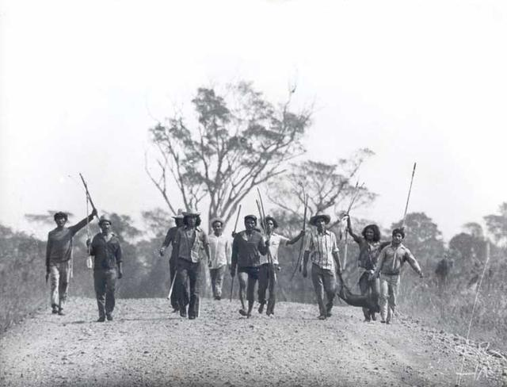
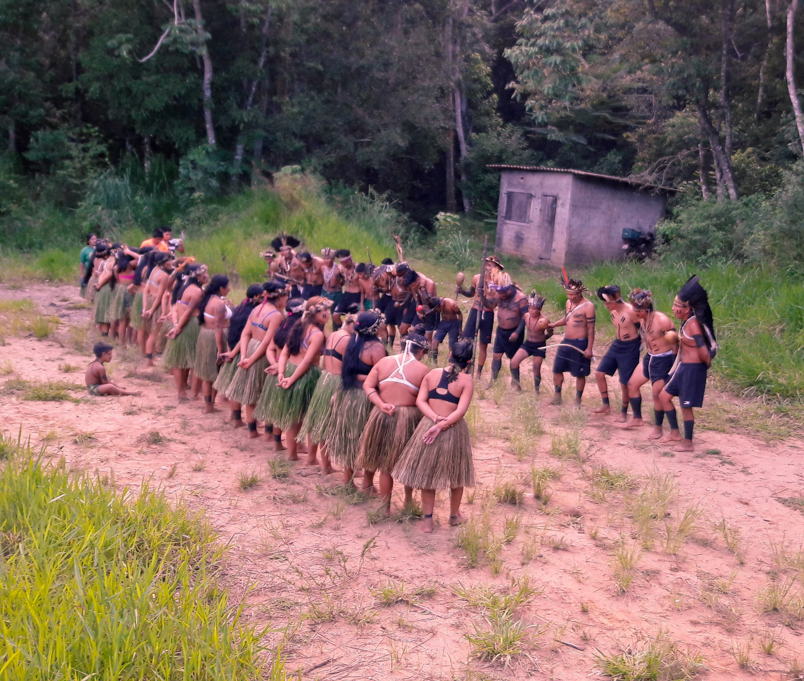
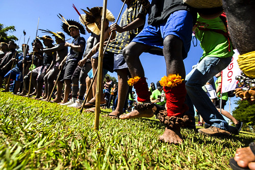
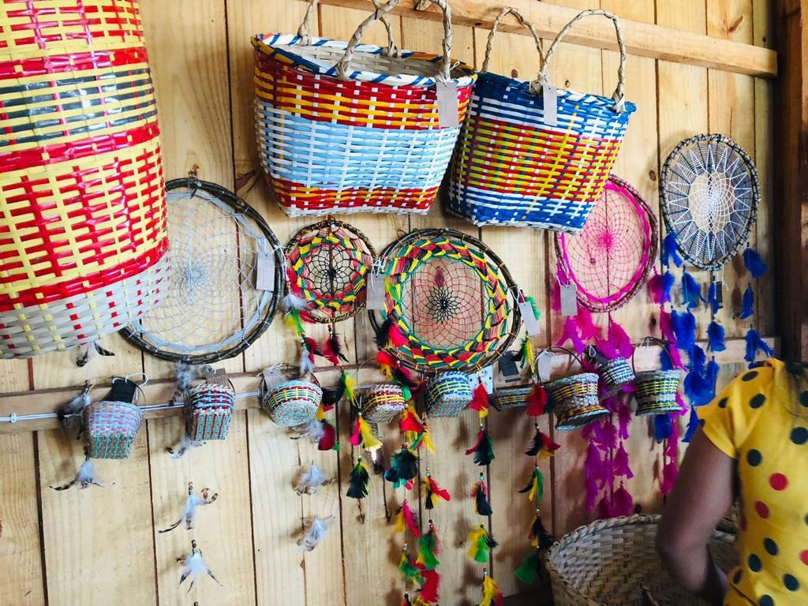

História
O povo Kaingang habita há séculos no sul do Brasil. Sua população atual é de aproximadamente 25 mil pessoas, distribuídas pelos estados de São Paulo, Paraná, Santa Catarina e Rio Grande do Sul. Com tal população, os Kaingang sozinhos representam mais de 40% do total dos povos de língua Jê . Os Kaingang vivem em mais de 30 Terras Indígenas que representam uma pequena parcela de seus territórios tradicionais. Por estarem distribuídas em quatro estados, a situação das comunidades apresenta as mais variadas condições. Em todos os casos, contudo, sua estrutura social e princípios cosmológicos continuam vigorando, sempre atualizados pelas diferentes conjunturas pelas quais vêm passando.
O contato dos Kaingang com a sociedade teve início no final do século XVIII e efetivou-se em meados do século XIX, quando os primeiros chefes políticos tradicionais (Põ’í ou Rekakê) aceitaram aliar-se aos conquistadores brancos (Fóg), transformando-se em capitães. Os contatos “amistosos” de grupos Kaingang com a sociedade luso-brasileira iniciam-se por volta de 1812 na região de Guarapuava, no centro do Paraná. Os últimos grupos “pacificamente” contatados foram os Kaingang de São Paulo, na região dos rios Feio e Aguapeí, em 1912.
Antigamente, para se proteger do inverno rigoroso que castiga as elevadas regiões do Sul do Brasil, chamados Campos de Cima da Serra, construíam suas casas de forma enterrada, mantendo-as, assim, protegidas dos ventos fortes e gelados que cortam o planalto. Por vezes, as paredes eram compactadas com argila mais fina, resultando em uma camada de revestimento. O teto era apoiado sobre estacas: uma estaca principal no centro, que descia até o chão da casa, e estacas laterais, que irradiavam do mastro central e se apoiavam na superfície do solo, na parte externa. Este teto ficava pouco acima do nível do terreno, garantindo ventilação, iluminação e trânsito.
Quem visita uma área indígena Kaingang hoje em dia vai encontrar as famílias Kaingang vivendo em casas de alvenaria, em casas de madeira ou em casas de pau-a-pique, cobertas de folhas de coqueiro ou sapé.


Danças e Festas
As danças e festas do povo Kaingang estão profundamente ligadas à sua espiritualidade, à coletividade e à preservação de sua cultura. Essas práticas têm significados simbólicos e rituais, sendo momentos importantes de conexão com os ancestrais e com a natureza. As celebrações geralmente reúnem toda a comunidade, fortalecendo os laços sociais e reafirmando a identidade cultural do grupo.
As danças tradicionais são realizadas principalmente em ocasiões especiais, como rituais, encontros comunitários e cerimônias espirituais. Elas costumam ser coletivas, com movimentos repetitivos e ritmados, acompanhados de cantos tradicionais que são transmitidos oralmente de geração em geração. Esses cantos não servem apenas como música, mas também como forma de contar histórias, preservar conhecimentos e expressar crenças espirituais.
As rezas e a religião do povo Kaingang estão profundamente ligadas à sua visão de mundo, na qual não há separação entre o espiritual e o cotidiano. Para eles, a natureza, os ancestrais e os seres humanos estão conectados, e as rezas funcionam como uma forma de manter esse equilíbrio.
Além dos rituais, existem também momentos de festa e celebração que incluem comida tradicional, música e convivência coletiva. Nessas ocasiões, as danças continuam sendo uma forma de expressão cultural e de reafirmação da identidade indígena, especialmente diante das influências externas ao longo do tempo. Assim, as danças e festas Kaingang não são apenas manifestações culturais, mas também formas de resistência e preservação de sua história e modo de vida.
Tradições e Rituais
O Ritual do Kiki é um ritual de culto aos mortos dos Kaingang. No período pré-colonial, o ritual era performado anualmente com o objetivo de fornecer aos mortos uma boa transição ao numbê (o mundo dos mortos). Entretanto, com o processo de colonização do Brasil e a consequente catequização imposta aos indígenas, o Kiki parou de ser realizado.
Os indígenas Kaingang não concebem o meio ambiente unicamente como fornecedor de matéria-prima, mas se veem como parte dele. Não o consideram inerte, ao contrário, para eles todos os elementos naturais são dotados de espírito e agem com intencionalidade
É importante lembrar que a concepção de saúde Kaingang está ligada ao seu conhecimento e à relação que mantém com a natureza, o Kujá, , líder espiritual ou curandeiro, responsável por conduzir rezas, rituais e práticas de cura é quem faz a intermediação entre o doente e os seres da natureza na busca pela cura, sendo muito recorrente a busca dos espíritos das pessoas que têm seus espíritos no Numbê para serem curadas. O curador, por sua vez, é aquele que possui o “saber não-guiado”, ele detém os conhecimentos sobre os ”remédios do mato”. Os curadores da Terra Indigena Apucarana conhecem e utilizam, ainda, diversas espécies de plantas exóticas à sua região, espécimes que adquirem com outras etnias ou mesmo nas casas de comércio de ervas da cidade. Frequentemente, as propriedades curativas destas plantas são reinterpretadas segundo as concepções dos processos de cura Kaingang.


Arte e Grafismo
Os relatos de viajantes e pesquisadores do passado registraram a riqueza das artes e da cultura material kaingang. Fabricavam armas de guerra e de caça, tecidos de fibras de urtiga brava, talas de caraguatá, cestos de taquara de vários tamanhos e formas para fins diversos, enfeites, adornos e utensílios de cerâmica e porongos (cabaças).
As principais armas de guerra constituíam-se em arcos (uy), flechas (dou) e lanças (urugurú). As pontas das flechas eram de osso de macaco bugio (gòg) e mico (kajér), mais tarde, passaram a ser de ferro obtido dos brancos. Os arcos eram feitos de pau d’arco (Tabebuia Chrysantha). Cabeças de flechas eram feitas de taquara larga, de varas farpadas, de varas de madeira, apontadas com afiada ponta de osso de macaco ou veado, ou ainda com arrebites de madeira, para pegar passarinhos.
Entre os instrumentos musicais dos Kaingang podemos citar os seguintes: buzinas de chifre de boi, flauta de taquara, maracás e apitos. Encontramos quase todos esses instrumentos na Terra Indígena Xapecó-SC durante as cerimônias do kikikoi (ritual dos mortos).
Pesquisas recentes sobre grafismo kaingang vêm revelando aspectos etnográficos importantes. Os grafismos aparecem em uma grande variedade de suportes como trançados, tecidos, armas, utensílios de cabaça, cerâmica, troncos de pinheiros e nos corpos dos Kaingang. Os trançados revelam formas relacionados à cosmologia dualista dos Kaingang, evidenciando a organização simbólica dos mundos social, natural e sobrenatural em metades kamé e kairu (dois gêmeos mitológicos fundadores da cosmologia e organização social do povo)

Cestaria Kaingang